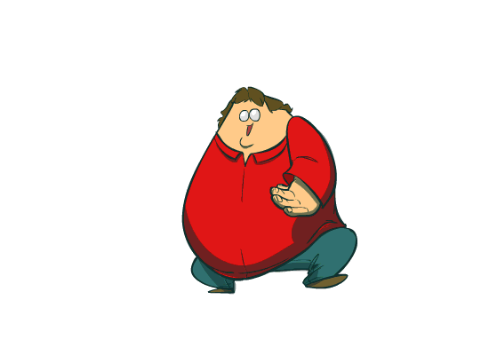

Cool, you got it. You solved the first puzzle. Hopefully that one wasn't 
too hard. I'll give you some more information about the game now that 
you've made some progress.

</br>

First of all, it's a total of 5 levels. You're 1/5 of the way there. Also, you should know that the reason this 
entire site is so fucking ugly is because I'm a lazy sack of shit (that 
should be a helpful hint).

</br>

From this point on the puzzles will get 
a bit harder. You may need to do some math or logic or just some sort of 
thinking in general, rather than just looking up what something is and 
using a website for it.

</br>

In this puzzle, you must find the original source for this GIF.

</br>
The website will be __________.org/_____.gif

</br>

Find the values of the two blank spaces. Once you do, put the two 
together to get one word. Then add that to the current URL.
